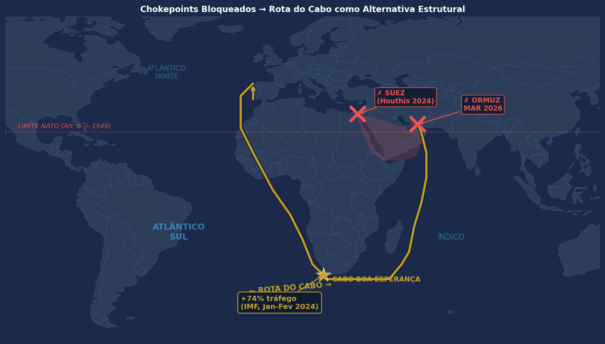
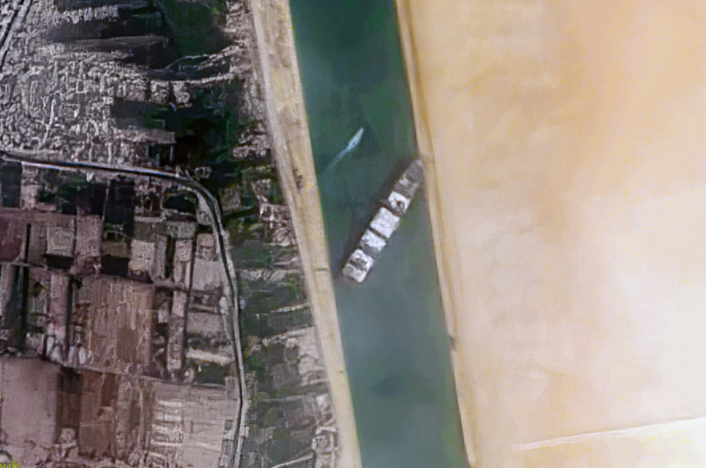
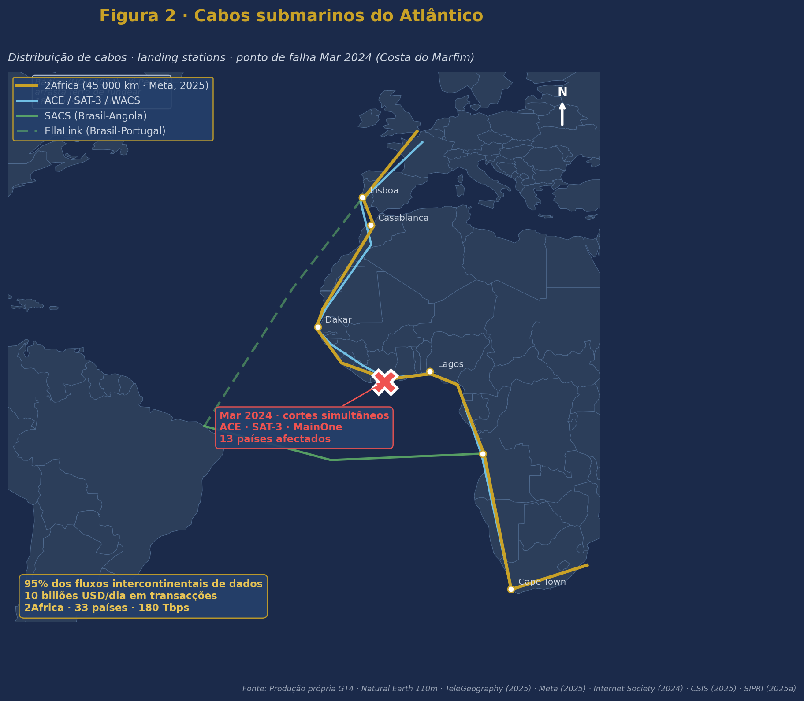

Estratégia MarÃtima · Ensaio Final
Atlântico Sul 2030
A Guerra dos Cabos e Portos na Competição Tripolar
1TEN AN Ana Filipa Pereira · 1TEN FZ Edgar Carvalho
1TEN STAEL Jorge Pessoa · 1TEN EN-MEC João Paulino · 1TEN M Filipe Metelo
1TEN STAEL Jorge Pessoa · 1TEN EN-MEC João Paulino · 1TEN M Filipe Metelo
Instituto Universitário Militar · CPOS-M 2025/26 · GT4
16 · JUL · 2026
Abertura
O Despertar do Atlântico Sul
Três sinais empÃricos · 2024–2026
+74%
Tráfego pela rota do Cabo · Jan–Fev 2024
FMI · 2024
−90%
Tráfego no Estreito de Ormuz · Março 2026
Kpler · 2026
20 M bbl/dia
Petróleo redireccionado para a rota do Cabo
EIA · 2025
Deixou de ser periferia. É hoje rota vital — e exposta.
Tese · Roadmap
Tese central · estrutura do argumento
A lacuna de segurança resulta de um conceito de ameaça desactualizado:
a competição tripolar é infraestrutural — cabos, portos, corredores —
não sea control clássico.
§ I
Chokepoints tridimensionais
Geográficos · digitais · logÃsticos
§ II
Competição infraestrutural
Stratégie générale · manobra indirecta (Castex)
§ III
Hedging das potências médias
A sua viabilidade prova a tese
§ IV
Modernização qualitativa
ISR, vigilância, drones · não mais navios
Cadeia lógica
Como cada secção encadeia a seguinte
flowchart LR
P["Pergunta de partida
Por que falta arquitectura
de segurança ao AS?"]
I["§ I · Chokepoints
tridimensionais"]
II["§ II · Competição
infraestrutural"]
III["§ III · Hedging
das médias"]
IV["§ IV · Modernização
qualitativa"]
C["Resposta
O conceito de ameaça
está desactualizado"]
P -->|"redefine
chokepoint"| I
I -->|"quem os
instrumentaliza?"| II
II -->|"que espaço
deixa às médias?"| III
III -->|"que modernização
responde a esta lógica?"| IV
IV -.-> C
III ==>|"PROVA EMPÃRICA"| C
classDef inicio fill:#fff3e0,stroke:#c8a44a,stroke-width:2px,color:#0c1d33
classDef medio fill:#e8eef5,stroke:#1e4773,stroke-width:1.5px,color:#0c1d33
classDef final fill:#f3eedc,stroke:#c8a44a,stroke-width:2.5px,color:#0c1d33
class P,C inicio
class I,II,III,IV medio
§ I · Chokepoints
Chokepoints tridimensionais
Três camadas, uma só vulnerabilidade
Geográficos
- Suez · interdição parcial 2024–
- Ormuz · −90% (Mar 2026)
- Cabo da Boa Esperança · +74%
Digitais
- 95% dos fluxos intercontinentais de dados
- 10 biliões de dólares/dia em transacções financeiras
- 2Africa · 45 000 km · 33 paÃses · 180 Tbps
LogÃsticos
- Pré-sal brasileiro · 16,8 mil M bbl (reservas)
- Triângulo do LÃtio · 56% das reservas mundiais
- Procura de lÃtio × 9 até 2040
Vazio institucional. O Art. 6.º do Tratado do Atlântico Norte
limita o Art. 5.º a norte do Trópico de Câncer. Abaixo · sem arquitectura colectiva equivalente.
Secção
I
Vulnerabilidade tridimensional do Atlântico Sul
Geografia · dados · logÃstica — uma só lacuna institucional
§ I.1 · Geográficos
Chokepoints geográficos

Rota do Cabo (linha dourada) · Suez e Ormuz interditados (×) · limite NATO Art. 6.º

Ever Given · Suez, 23 MAR 2021 · ESA/Maxar
- Suez e Ormuz interditados em simultâneo
- Cabo · alternativa estrutural, não conjuntural
- Seguros e armadores reformulam o risco
FMI (2024) · Kpler (2026) · UNCTAD (2024) · EIA (2025)
Bónus · UNCTAD
Disrupção das rotas marÃtimas globais
UNCTAD · Navigating Troubled Waters · 2024
UNCTAD (2024) · Impact on Global Trade of Disruption of Shipping Routes in the Red Sea, Black Sea and Russian Federation
§ I.2 · Digitais
Chokepoints digitais

Cabos atlânticos: 2Africa (laranja), ACE/SAT-3/WACS (azul) · cortes Mar 2024 · incidente Yi Peng 3 (Báltico)

Nexans Skagerrak · navio posa-cabos
- 95% dos fluxos intercontinentais de dados
- 2Africa · 45 000 km · China Mobile entre os parceiros
- Mar 2024 · ACE, SAT-3 e MainOne cortados
- NOV 2024 · Yi Peng 3 arrasta ferro de fundear 180 mi náuticas sobre cabos (Báltico)
RAND (2025) · CSIS (2025) · Meta (2025) · SIPRI (2025a) · Internet Society (2024) · Christian/TeleGeography (2025)
§ I.3 · LogÃsticos
Chokepoints logÃsticos

Plataforma P-51 · Petrobras · pré-sal

Salar do Atacama · ESA Sentinel-2 · piscinas de lÃtio (turquesa)
16,8 mil M bbl
Reservas do pré-sal brasileiro
Petrobras · 2024
× 9 até 2040
Procura projectada de lÃtio · Triângulo concentra 56% das reservas mundiais
IEA · 2024 · USGS · 2024
Secção
II
Competição infraestrutural · três potências, três instrumentos

Almirante Raoul Castex (1878–1968)
Stratégie générale, manobra indirecta.
Nenhuma das três recorre à esquadra de batalha clássica.
Nenhuma das três recorre à esquadra de batalha clássica.
§ II.1 · China
CHN Infraestrutura como manobra indirecta
- 46 projectos portuários construÃdos, financiados ou operados na Ãfrica Subsariana (CSIS, 2019)
- $181 mil M em empréstimos · 2000–2024 (SAIS-CARI, 2024)
- Porto de Bata (Guiné Equatorial) · padrão Djibouti — instalação logÃstica com potencial de conversão militar (DoD, 2025)
- Cabo 2Africa · China Mobile entre os parceiros
- TAZARA · $1,4 mil M chineses — resposta directa ao Corredor do Lobito americano
Manobra indirecta de Castex — acumulação gradual de vantagem posicional pela infraestrutura.
§ II.2 · EUA
USA Resposta geoeconómica reactiva

Corredor do Lobito (dourado) · TAZARA chinesa (vermelho)
- Cobalto e lÃtio · DRC → Lobito
- $6 mil M+ comprometidos
- Resposta directa à TAZARA chinesa
Contraste · Indo-PacÃfico: carrier strike groups.
Atlântico Sul: USNS Comfort · navio-hospital (Continuing Promise, 2025).
Atlântico Sul: USNS Comfort · navio-hospital (Continuing Promise, 2025).
Atlantic Council (2025) · DFC (2025) · USSOUTHCOM (2025)
§ II.3 · Rússia
RUS DeclÃnio naval · presença terrestre

Mosi II · 2023
Fragata Almirante Gorshkov · mÃsseis Zircon
Fragata Almirante Gorshkov · mÃsseis Zircon

Mosi III · 2026
Corveta Stoykiy · sem capacidade de projecção equivalente
Corveta Stoykiy · sem capacidade de projecção equivalente
De fragata hipersónica a corveta em três anos. Port Sudan suspenso (Nov 2025).
Presença russa hoje terrestre — Africa Corps em 5 paÃses — não naval.
Faulkner et al. (2024) · ADF (2025) · Maritime Executive (2025) · Sudan Tribune (2025)
§ II · SÃntese
SÃntese tripolar
CHN
- Instrumento infraestrutura
- Capital massivo
- Trajectória ↗ ascendente
USA
- Instrumento geoeconomia
- Capital dirigido
- Trajectória ↔ reactiva
RUS
- Instrumento paramilitar
- Capital limitado
- Trajectória ↘ declÃnio
A competição não se trava entre frotas — trava-se entre redes.
É este o núcleo analÃtico do ensaio.
É este o núcleo analÃtico do ensaio.
Secção
III
Hedging das potências médias
Brasil · Angola · Ãfrica do Sul · Portugal não são receptáculos passivos.
A viabilidade do hedging prova que a competição é infraestrutural.
A viabilidade do hedging prova que a competição é infraestrutural.
§ III.1 · Brasil
BRA Active Non-Alignment

Submarino Riachuelo (S40) · Marinha do Brasil · primeiro do programa PROSUB
- 2024 · recusa formal da BRI · 2.º membro fundador BRICS a fazê-lo
- 2025 · co-presidência BRICS Rio
- PROSUB · tecnologia francesa (parceiro NATO)
- ~2034 · submarino nuclear Ãlvaro Alberto
Hedging em acto · cooperação técnica com França, liderança BRICS, recusa BRI.
CEBRI (2025) · Foreign Policy (2024) · Naval News (2025) · Janes (2026)
§ III.2 · Angola
AGO Middle Power Dreaming
USA
$553 M
DFC · Corredor do Lobito
FRA
€473 M
Acordos bilaterais
CHN
Maior aeroportochinês fora da China
Financiamento integral
Não pertence aos BRICS · equidistância deliberada · benefÃcios de todos os concorrentes.
ECFR (2025) · DFC (2025) · AidData (2025)
§ III.3 · Ãfrica do Sul
RSA O custo do hedging
−25%
Despesa militar desde 2015
$2,8 mil M (2024)
$2,8 mil M (2024)
SIPRI · 2025b
Estado da força naval:
1 fragata operacional · 0 submarinos navegáveis
1 fragata operacional · 0 submarinos navegáveis
- 2025 · presidência do G20
- JAN 2026 · exercÃcios navais com RUS + CHN + IRN
- FEV 2026 · voto a favor da Ucrânia na ONU
- Administração Trump · excluiu RSA das reuniões preparatórias do G-20
O custo do hedging torna-se visÃvel.
DefenceWeb (2023, 2025) · Foreign Policy (2025) · UN GA (2025) · Daily Maverick (2025)
§ III.4 · Portugal
PRT Convergência institucional única
- Único Estado com pertença simultânea à NATO e liderança de facto na CPLP
- ZEE de 1,7 milhões de km², concentrada nos Açores · controlo sobre rotas transatlânticas
- Açores · centro de gravidade extra-metropolitano, no sentido em que Castex usou o termo Castex1929–35
- NRP D. João II · primeiro porta-drones da União Europeia · 132 milhões de euros (cerca de 30% do custo de uma fragata convencional)
A posição estratégica de Portugal reside não na dimensão da frota — mas na convergência de NATO, cooperação CPLP e posição açoriana.
Castex (1929–1935/1994) · DGRM (n.d.) · Bernardino (2025) · Brahy (2026)
§ III · CPLP
CPLP · arquitectura emergente

CPLP atlântica · limite NATO Art. 6.º · Açores como hub
- >12 M km² · ZEE combinada com plataforma continental estendida (CPLP atlântica)
- ZOPACAS reativada em ABR 2023 · sem secretariado permanente nem mecanismos vinculativos
- CAVM Açores (proposta GT4 · conceito exploratório) · ISR partilhado CPLP / NATO / UE · sujeito a vontade polÃtica, financiamento e cadeia de comando por definir
Janela · revitalização ZOPACAS · Ãmpeto NATO/UE pós-crises de cabos · fecho financeiro do Lobito.
Bernardino (2025) · Ugeda & Sanches (2025) · Abdenur & Mattheis (2023) · NATO (1949 / 2022)
Secção
IV
Modernização naval qualitativa
A resposta operacional vem do Mar Negro, do Báltico e do Atlântico Sul.
§ IV · Lições
Lições da Ucrânia · ISR > frotas

USVs ucranianos · Serviço de Segurança da Ucrânia (SBU)
- A Ucrânia, sem marinha equivalente à russa, afundou ou danificou:
- Cruzador Moskva · navio-almirante
- Novocherkassk
- +20 unidades da Frota do Mar Negro
- Ferramentas: mÃsseis Neptune · drones Magura V5 · ISR partilhado pela NATO
- Hughes et al. (2018) · C4ISR = multiplicador crÃtico de força
- Corbett (1911) · o comando do mar pode ser temporário e local, não absoluto
 Corbett1911
Corbett1911
Marinhas pequenas com ISR superior produzem efeitos desproporcionados na vigilância de cabos e no controlo de rotas.
Conclusões
Quatro proposições conclusivas
- Os chokepoints do Atlântico Sul são tridimensionais — geográficos, digitais e logÃsticos — e nenhum dispõe de protecção institucional adequada.
- A competição é infraestrutural. China nos portos e cabos · EUA nos corredores geoeconómicos · Rússia em presença paramilitar declinante. A doutrina naval clássica não a captura.
- As potências médias possuem agência. Brasil, Angola e Ãfrica do Sul não são peças de tabuleiro — são jogadoras com estratégias próprias.
- Portugal reúne uma convergência institucional única — NATO, CPLP e Açores — que confere capacidade de mediação e vigilância que nenhum outro Estado possui.
Janela de oportunidade real: ZOPACAS 2026 · momentum pós-Ucrânia · Lobito em execução.
O risco maior não é a competição em si — é a ausência de arquitectura institucional para a gerir.
Obrigado · Q&A
As 63 fontes citadas estão disponÃveis no ensaio completo.
Estamos disponÃveis para perguntas.
GT4 · Atlântico Sul 2030 · IUM CPOS-M 2025/26